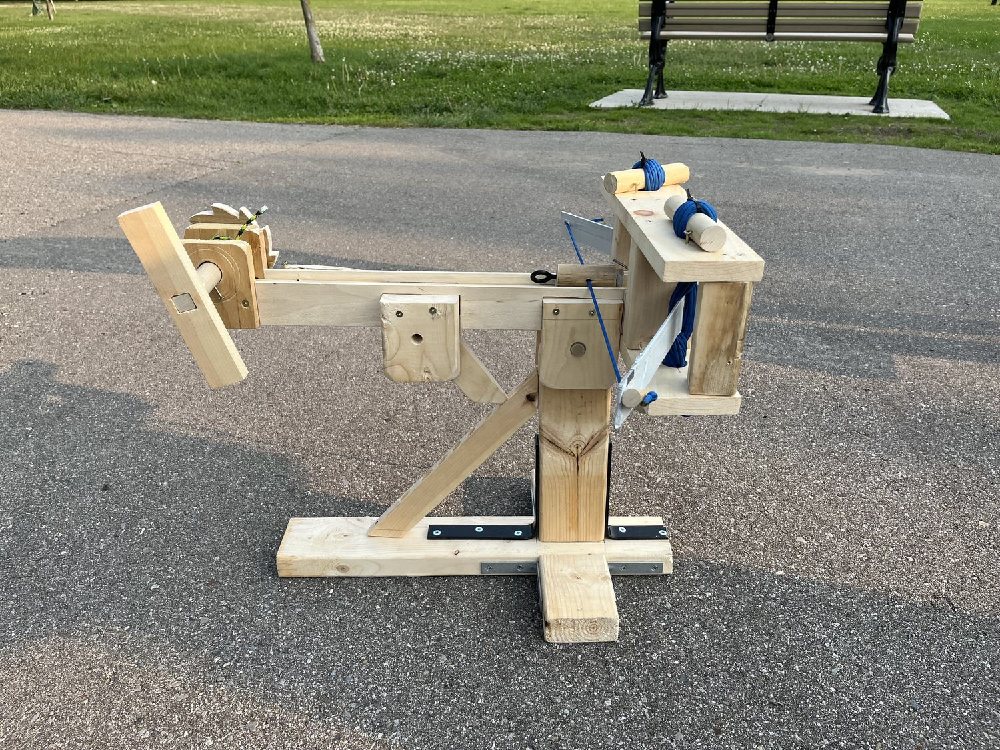
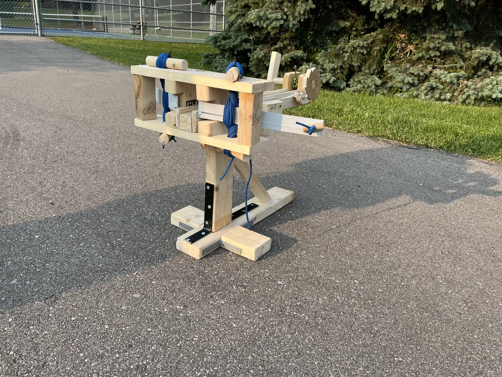
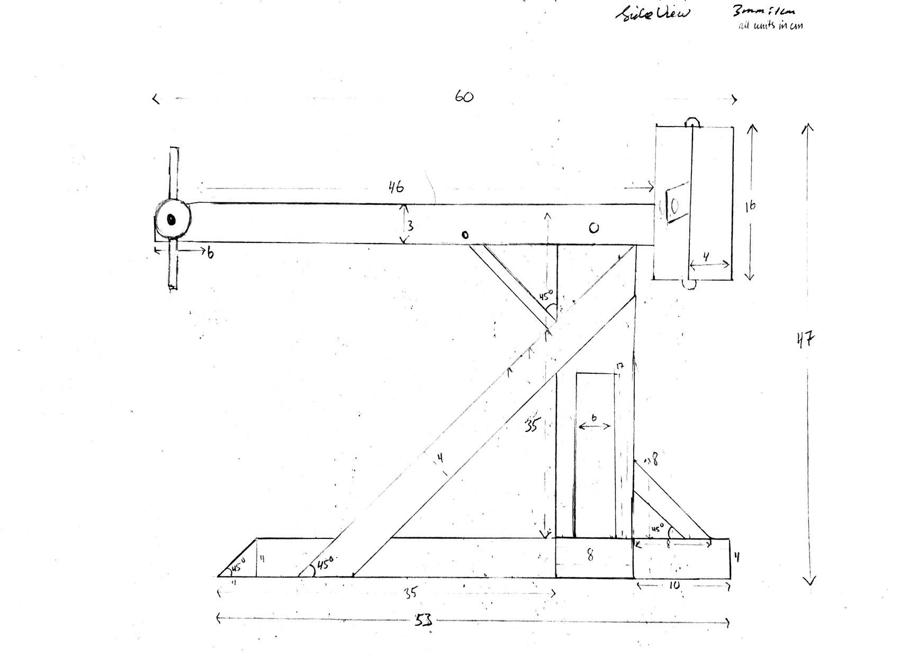
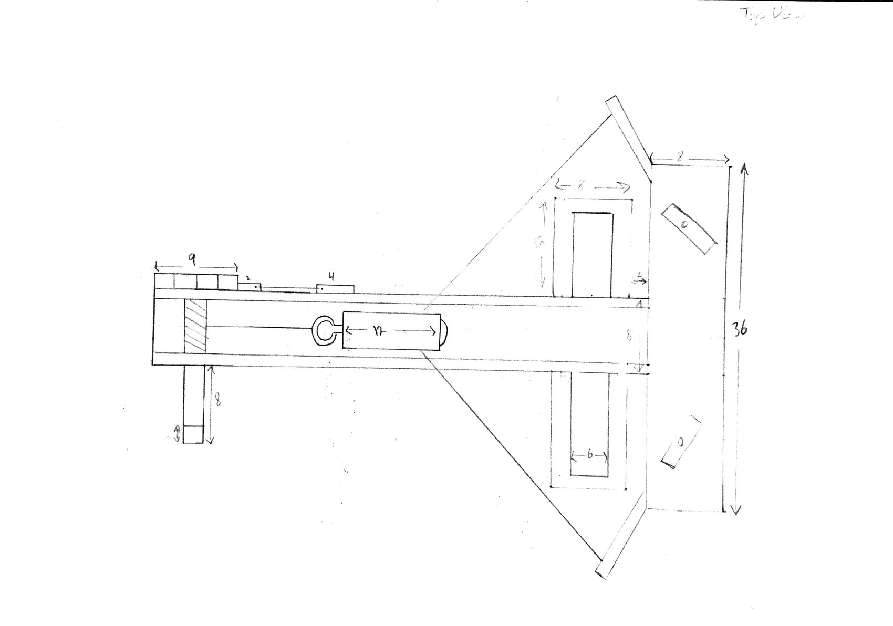

A wooden torsion ballista built for a high school physics competition against roughly 30 other teams. Kinematics predicted about 60 m of range. It threw 35 m, and the gap turned out to be the most useful part of the project. Placed 1st.

| Competition | High school physics, ~30 teams of 2–3 |
|---|---|
| Result | 1st place |
| Mass | 6 kg (10 kg limit) |
| Envelope | Within 50 × 50 × 60 cm |
| Mechanism | Torsion bundle, wooden frame |
| Projectile | Golf ball |
| Range | 35 m measured (60 m predicted) |
The competition set hard limits on size, mass, and manufacturing method. Everything had to be built by hand.

Hand-drawn layouts used to cut and assemble the frame. Top and side views, dimensioned in centimetres.


The range prediction came from kinematics, treating the launch as lossless with all stored energy going into the ball. That gave about 60 m. The ballista threw 35 m, tape-measured at the competition.